Deciding what connects to the power grid, project by project and as a whole.
New solar farms, batteries and data centers wait years to connect, and most never do. Certified Interconnection is an open-source study engine that tells each project, and the whole cluster asking at the same time, how much the grid can take under every outage and season, what it would take to make room, how long and how much, and when a fast answer can be trusted without the full study.
Led by Sehaj Randhir Singh. Built on Power Grid Model; designed to check grid AI models like OpenGridFM. Every number below is computed by code in the repositories and reproducible from them.
Every bus of the IEEE 118-bus grid, sized by how much new generation it can take, cycling through three seasons, with no outages and then under every single-line outage. With outages the median bus can take 80 MW at summer peak instead of 180.
The problem
Before anything connects, the grid operator has to show the grid stays within limits if any line fails, in every season it studies, together with every other project asking at the same time. That is the interconnection study. Since FERC Order 2023, operators like PJM study requests in clusters, because projects that fit alone can overload the grid together. From PJM's own public queue, which we cleaned and published:
8,190generation requests in PJM's public queue
24%of requests submitted 2008 to 2017 reached service
72%of them withdrew
68%of active requests share their county with 5+ others
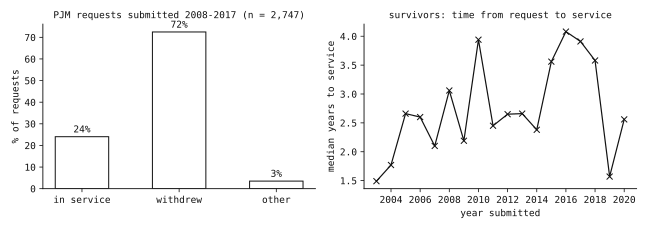
Left: what happened to requests submitted 2008 to 2017. Right: for the ones that made it, the median time from request to service by the year they entered the queue.
What it answers
Can each project connect on its own?Its capacity under single-line and common-tower outages, at summer peak, winter peak and light load, and which outage and which line or voltage limit stops it.
What can the cluster take together?The group's capacity under the same checks, and how much projects crowd each other out or help each other.
Which projects should be admitted?First come, largest first, or the exact best subset, every answer checked with full AC power flow.
How do we make room?Flexible load, batteries, tripping generation after an outage, opening a line, or connecting at partial size, and the MW each one unlocks.
How long, and how much?PJM's own timelines, and upgrade cost ranges where every number has a public source.
When can a fast answer be trusted?A fast linear answer is certified only with a tested error bound; otherwise it goes to the full study.
Architecture
Five stages on one physics engine. The physics and the guarantees are exact; AI only proposes and ranks, and never makes a "safe" call on its own.
How it fits with Power Grid Model and OpenGridFM
Power Grid Model, the open-source solver European grid operators use, does the AC power flow. grid-engine turns public grid cases into its input and adds everything a study needs on top. Grid foundation models such as OpenGridFM and GENCO are treated as fast proposals: each prediction is checked, and good ones warm-start the exact solver.
What a cluster study asks
Step 1
The physics engine
grid-engine converts MATPOWER cases to Power Grid Model, builds three seasons (capacitor banks switch with load) and three outage sets (every single branch, common-tower pairs, a sample of double outages), and runs each set as one batch. Generator reactive limits are optional, using MATPOWER's own method of switching a generator at its limit from voltage control to fixed output.
18,935of 19,041 cases agree with an independent solver to 1e-10 pu
0disagreements on which cases converge
1.1e-13pu against Power Grid Model's own IEEE 300 reference
7x to 115xfaster than a pandapower loop on the same machine
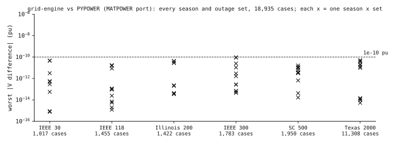
Six grids from 30 to 2,000 buses, three seasons, every outage set: grid-engine against PYPOWER, a port of MATPOWER's solver. Each x is the worst bus of one season and outage set. The other 106 cases diverge in both solvers. (pandapower's MATPOWER converter disagrees with both on IEEE 300 and Texas 2,000, so it is not the referee there.)
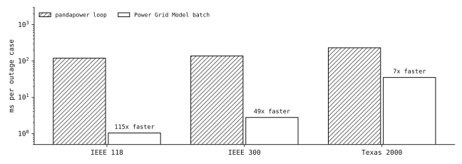
Time per outage case. The pandapower loop runs without numba from a flat start, so it is a rough reference, not a tuned comparison.
The linear shortcut misses unsafe cases
Fast screens use a linear (DC) model. Checked against full AC on every outage:
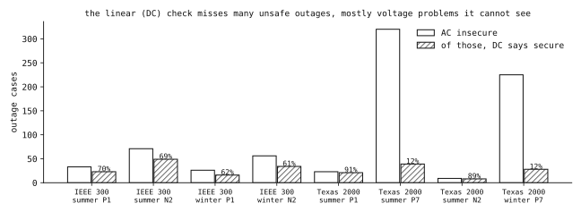
On IEEE 300 at summer peak, the DC check calls 23 of 33 unsafe single outages safe (70%), mostly voltage problems it cannot see. On the 2,000-bus Texas grid it misses 21 of 23.
Step 2
Individual and cluster capacity
For any bus, request or cluster: the largest MW that keeps every case within limits (new generation displaces existing generators in proportion, as in a deliverability study), what limits it, and the exact best set to admit. A project is only charged for violations it causes or worsens.
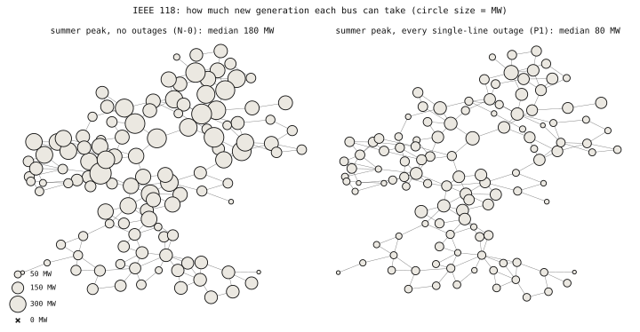
Summer peak: the same grid with no outages (left) and under every single-line outage (right). The median bus can take 180 MW without outages and 80 MW with them.
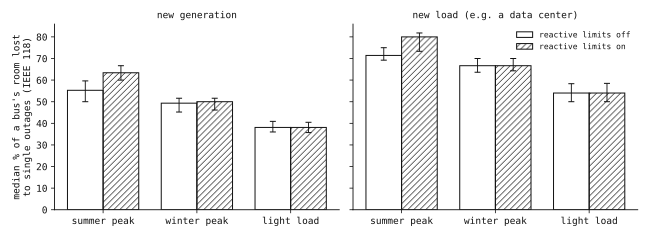
Single outages take 38% to 55% of a typical bus's room for new generation and 54% to 71% for new load, most at summer peak. Ignoring generator reactive limits understates the summer loss (55% vs 63% for generation, 71% vs 80% for load). Whiskers: 95% bootstrap intervals.
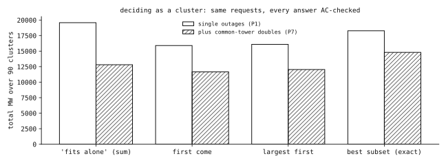
90 clusters of 5 to 8 nearby requests across three seasons. The exact best subset admits 15% more than first come under single outages (95% interval 9% to 23%) and 27% more with common-tower doubles (19% to 38%). Adding up what fits alone overpromises in 32% of clusters.
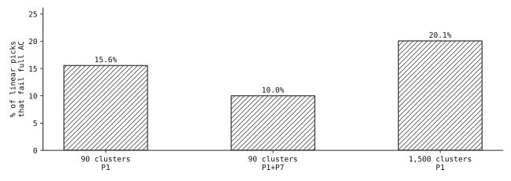
The linear (DC) best pick is not safe under full AC in 15.6% of the 90 clusters, and in 20.1% (301 of 1,500) of a larger sample.
Across four grids
Grid
Clusters
Project capacity lost to outages (median)
Cluster vs sum of its parts (median)
Cluster choice vs first come (total MW)
IEEE 30-bus
101
59%
50%
+29%
IEEE 118-bus
58
54%
47%
+21%
Illinois 200-bus
77
50%
55%
+17%
IEEE 300-bus
39
46%
35%
+14%
An earlier, separate experiment (single outages; the better of two cluster-wide picks). No simple pre-check (share of loads, mix, headroom, cluster size) predicted which clusters gain on a grid it hadn't seen better than a coin flip, so the engine runs the decision instead of guessing.
Step 3
Ways to make room
For the 80 of 90 clusters that don't fully fit, how much more each option admits beyond the best plain subset. Every admitted set is re-checked in AC under its own rule, and an option can only add MW.
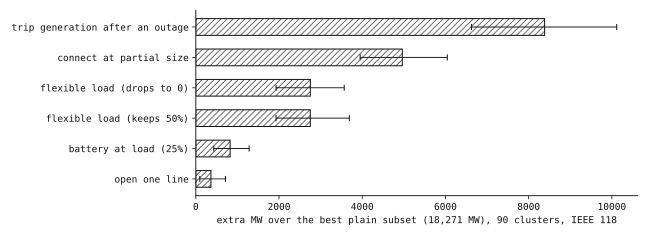
Tripping generation after an outage (a remedial action scheme) unlocks the most, then connecting at partial size and flexible load. Opening a single line rarely helps here. Whiskers: 95% bootstrap intervals over clusters.
Step 4
Time and cost
From PJM's queue: a median of 2.8 years from request to operation (1,205 projects) and 1.3 years to withdrawal (4,093). Upgrade costs come only from public sources (Lawrence Berkeley National Lab's PJM cost data, MISO's transmission cost guide, PJM), each with its URL and page, and are given as ranges.
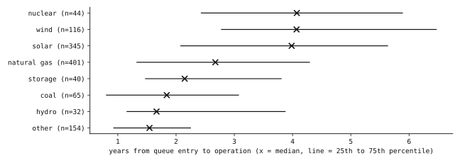
Years from queue entry to operation by fuel (x = median, line = middle half of projects). Solar, wind and nuclear take about four years; gas about 2.7.
On the 118-bus clusters, the first upgrade needed to admit the rest is a reconductored line in 71 of 80 clusters, an added transformer in 4, reactive support in 3 and a new line in 2. The costs there are illustrative, because the test grid has no line lengths.
Step 5
Certify or defer
A fast linear pick is wrong about one time in five. Instead of checking every pick with the full study, each is scored by AC on only its ten riskiest outages and certified if the score clears a threshold chosen by fixed-sequence testing on calibration clusters, so the bound holds for the picks the screen actually makes.
81.6%of fast picks certified (target error 5%)
1.5%of certified picks fail AC (9 of 612; 95% interval 0.7% to 2.8%)
42AC solves per decision instead of 178
9.1%certified when DC's own margin is the score
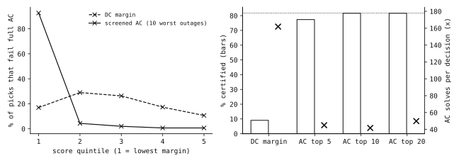
Left: DC's own margin barely ranks risk; the screened AC score puts almost all failures in its lowest fifth. Right: certified share (bars) and AC work per decision (x; dotted line = full check). Over 200 random splits the test error exceeded 5% in 1.5% of them. Limits: one grid, single outages; the strict rule certifies in 119 of 200 splits, and a variant chosen after seeing results certifies in all 200.
The AI layer
Learned models predict how far full AC capacity sits from the linear answer, for any set of requests. The Set Transformer treats the cluster as a set: order doesn't matter, and attention lets every pair of requests interact, which is exactly what a cluster study is about. Its output starts at zero, so before training it is the linear answer.
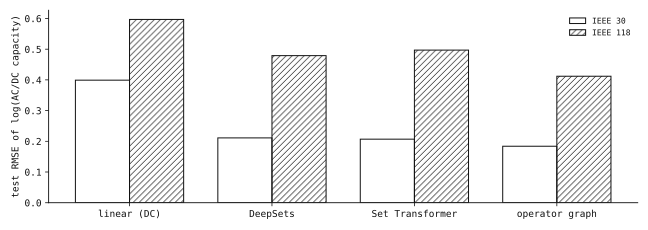
Error in predicting log(AC / DC capacity) on held-out clusters. On IEEE 30 the learned models halve DC's error, and the operator graph (a learned operator at every bus) is best. On joint safety they cut DC's false-safe rate from 34.5% to between 4% and 7% (IEEE 30).
On IBM and Hydro-Québec's GENCO grid foundation model (synthetic Texas 2,000-bus, 989 outage cases), our check certified 609 answers and passed no wrong one, and warm-starting the exact solver from the model's prediction cut Newton iterations from 4 to 2 (median). The same idea is being built into Power Grid Model: our warm-start benchmarks on the maintainers' experimental branch matched our reimplementation in 2,712 of 2,712 cases and saved 15% to 17% of solve time on the 118 and 300-bus grids.
Documents
Problem statement Definitions, five testable hypotheses, the baselines, and what would count as failure.
Bigger grids: Steps 2 to 5 on the 2,000-bus Texas grid with real PJM project sizes.
Guarantees everywhere: certify or defer for every stage (capacity, options, cost), and for double outages.
AI proposes, physics decides: OpenGridFM and the operator graph as the fast proposal inside certify or defer, and warm starts built into Power Grid Model upstream.
Fair cost sharing that survives withdrawals without a full restudy.
Dynamics: stability after a fault for inverter-based projects (ANDES) and short-circuit strength.
Real networks: a utility or ISO partner for a full, published validation, and review by planning engineers.
Honest limits
Public test and synthetic grids only. Real utility network models are restricted (critical-infrastructure data).
Outage sets and seasons use our stated definitions, not an operator's study files.
Steps 2 to 5 run on one grid so far (IEEE 118); costs on a test grid are illustrative; Step 5 covers single outages.
Approvals, permitting and land are human decisions; the engine can flag them, not predict them.